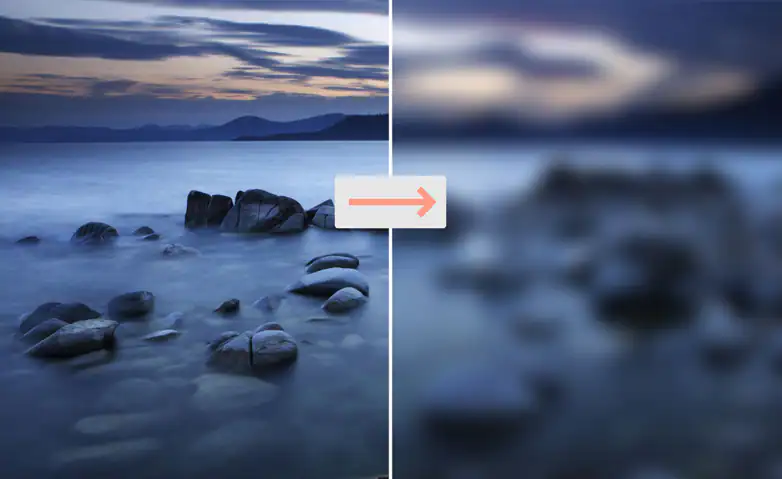

Una de las aplicaciones de las convoluciones es procesar imagenes para agregar filtros como el desenfoque

En Visión computacional el procesamiento de imagenes ayuda a obtener información de la imagen como los bordes de los objetos
Las convoluciones en el area de aprendizaje profundo han traido un gran avance en la inteligencia artificail ya que permite guardar información espacial de las imagenes que se procesan